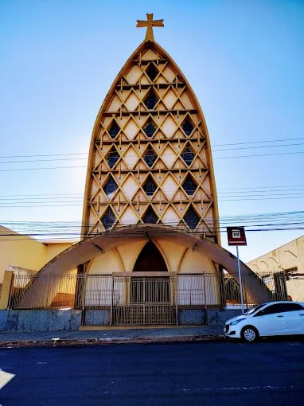

Sobre o Monsenhor
Uma vida dedicada à fé e à comunidade síria no coração do Brasil.
Natural da Síria, Monsenhor Antônio Nakkoud chegou ao Brasil há mais de meio século, trazendo consigo não apenas a fé ortodoxa oriental, mas um compromisso profundo com a preservação da cultura e tradições sírias em terras brasileiras.
Desde 1971, ano da inauguração da Igreja Síria Ortodoxa de Antioquia São Jorge em Campo Grande, Monsenhor Antônio tem servido como pároco, guiando gerações de fiéis com sabedoria, compaixão e dedicação inabalável.
Reconhecido como líder comunitário exemplar, sua influência transcende os muros da igreja. Em 2022, durante debate presidencial transmitido pela Rede Globo, a candidata uma candidata à Presidência da República.
Mais de 50 anos de sacerdócio testemunham uma jornada de fé, serviço e amor ao próximo que continua a inspirar fiéis e não-fiéis, sírios e brasileiros, em uma ponte de união e paz.
Igreja Síria Ortodoxa São Jorge
História
Fundada em 1971, a Igreja Síria Ortodoxa de Antioquia São Jorge é a segunda igreja síria ortodoxa construída no Brasil, sendo a primeira localizada em São Paulo. Sua criação representa um marco histórico para a comunidade síria ortodoxa no Centro-Oeste brasileiro.
Tradição
A igreja mantém vivas as tradições litúrgicas milenares da Igreja Síria Ortodoxa de Antioquia, uma das mais antigas denominações cristãs do mundo, com raízes que remontam aos primeiros séculos do cristianismo.
Patrimônio
Ao longo de sua história, a igreja recebeu a honra de hospedar três Patriarcas da Igreja Síria Ortodoxa de Antioquia, reafirmando sua importância como centro espiritual da comunidade síria ortodoxa no Brasil.

Serviços Religiosos
Missa em Árabe
Domingos às 9h30
Liturgia tradicional na língua árabe, preservando as tradições ancestrais da Igreja Ortodoxa Oriental.
Missa em Português
Domingos às 11h
Celebração em português, acolhendo a comunidade brasileira e fortalecendo a integração cultural.
Feriados Religiosos
Conforme calendário ortodoxo
Celebrações especiais seguindo o calendário juliano da tradição ortodoxa oriental.
✦ Casamentos ✦
Na Igreja Síria Ortodoxa, o Matrimônio não é apenas uma celebração — é um sacramento de coroação. Os noivos são coroados diante de Deus e da comunidade como reis e rainhas do lar que estão fundando.
A cerimônia é realizada dentro da Igreja, com a liturgia completa do rito sírio, em um dos ambientes mais belos e históricos de Campo Grande: a Igreja São Jorge, fundada em 1971, a segunda de seu rito construída no Brasil. Um casamento aqui não é apenas uma data no calendário — é um evento que conecta duas famílias a mais de dois mil anos de tradição cristã.
✦ Batizados ✦
O Batismo é o sacramento de entrada na vida cristã e na comunidade ortodoxa. Na tradição síria ortodoxa, herdada diretamente da Igreja de Antioquia — fundada pelos próprios apóstolos — o Batismo é realizado por imersão completa, símbolo da morte e ressurreição em Cristo.
A Igreja São Jorge incentiva que as crianças sejam batizadas nos primeiros meses de vida, acolhendo-as desde cedo na comunhão dos fiéis. Para os pais e padrinhos, o sacramento começa antes da cerimônia: com a catequese e o compromisso de criarem a criança na fé ortodoxa.
Contato e Localização
Endereço
Igreja Síria Ortodoxa de Antioquia São Jorge
Rua 14 de Julho, 1060
Centro, Campo Grande/MS
CEP: 79002-381
✆ (67) 3324-7937
⚠ A paróquia não possui WhatsApp.
Atendimento exclusivamente por telefone.
Secretaria: segunda a sexta, 8h–10h e 14h–16h
Todos são bem-vindos para participar de nossas celebrações e conhecer a rica tradição da Igreja Ortodoxa Oriental.